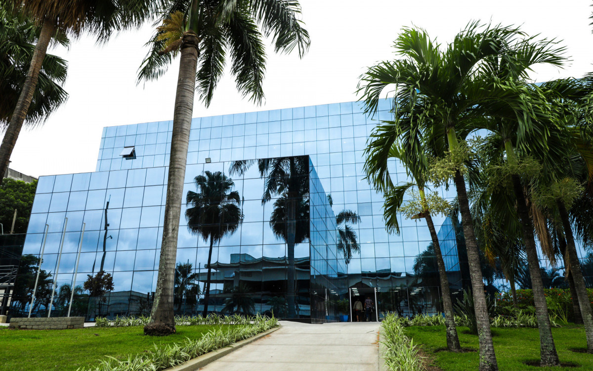

História
A Trajetória de São João de Meriti
Fundada em 21 de agosto de 1947, a cidade construiu uma rica identidade ligada ao comércio forte e à famosa 'Capital do Jeans'.
Ler mais
Trabalho, desenvolvimento e compromisso com o povo meritiense. A Capital do Jeans em constante evolução.
Conheça a GestãoFique por dentro de tudo o que acontece na nossa cidade

Fundada em 21 de agosto de 1947, a cidade construiu uma rica identidade ligada ao comércio forte e à famosa 'Capital do Jeans'.
Ler maisEvento promovido pela Secretaria de Cultura devolve o brilho e o espírito natalino para as famílias no coração da cidade.
Ler maisReforma e modernização do Hospital Municipal e da Maternidade garantem atendimento humanizado e de alta qualidade.
Ler mais